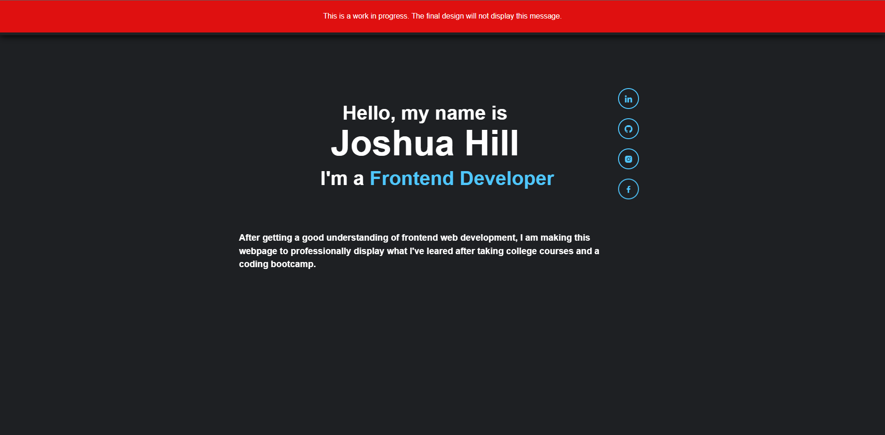

Projects
This is my current portfolio; where I display my work and skills as a front-end web developer.
On this page, not only do I display my work; but also describe my thought process And explain how I got to the end result.

This is an image of what I initially sketched out for what to display on my homepage. I figured it would tell the story of how it got me to be where I am today and share some bacground of who I am; but after looking at YouTube videos of people critiquing other portfolios and seeing basic videos of what should (and shouldn't) go on your portfolio, I figured I would be was sharing too much unneccecary info about me. It was still fine to draw out because I then thought that it's something that I could put on my About page instead.
It does have some things that you do see on the homepage right now; like the nav bar on the top left of the sketch. I dreamed big and wanted it to be animated and something that people can admire for the effort and small detail that was put into this portfolio; just like how I went through making a little background for when you hover over the "J Hill" "logo".
After Watching videos and thinking about a creative design, I came up with an idea, sketched it out, and asked ChatGPT what else goes in a portfolio.
You can see here how I was trying to go for more of a pixelated look, with a beginning screen of all the links floating around in front of a hero that I would've created. I also showed the first five elements that ChatGPT told me to have for a portfolio.
After I got the basic layout built in the webpage, I didn't understand what I was thinking for having the nav links not only be shown twice in the same screen, but also the fact that it's the first thing you see and that it takes up the whole screen; so in other words, I thought it was a dumb design flaw that I didn't realize till I actually built it out.
After thinking about another design, it wasn't long for me to go back to the design I was using before but tweak it a little and sort of encorperate both designs together.
Then, after some time away from working on this and more insight on portfolios and examples of other portfolios that got a job at big companies (using Cofolios), I saw how little people displayed on their portfolio. So that's what I did; I cut out the about me and skills section and only had my homepage display my welcoming screen and handpicked projects. It was convenient because at the end of the page, I also have a place for the user to navigate to my About or Projects page.
The footer came naturally; I used haikei for the complex shape and added all the content I wanted, in the layout that I had in mind :)
From there, I had my layout for the homepage done. I then needed to finish my About, Projects, and Contact page.
I already had an idea of what I wanted to do for the Projects page and it was already being worked on while finishing the homepage, so that's what I focused on next.
One thing that I did know while working through this process is that I wanted a plain white background. Although it isn't completely pitch white, it still gives the purpose I had in mind of it looking like a blank sheet of paper with notes on it.
hi :)
hiello :)
heeeeeheeeee :)